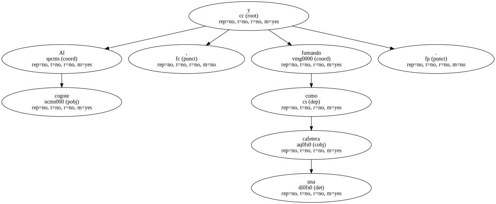
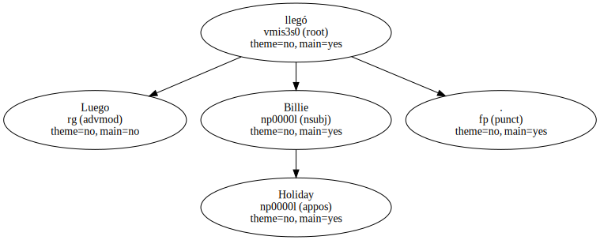
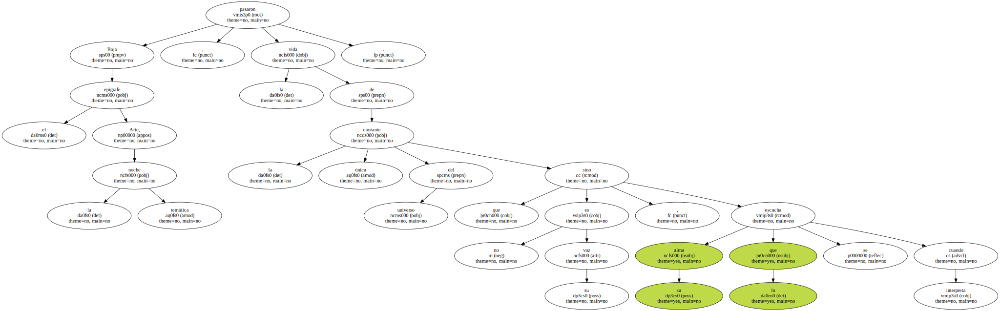
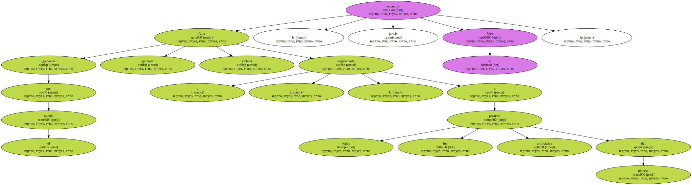
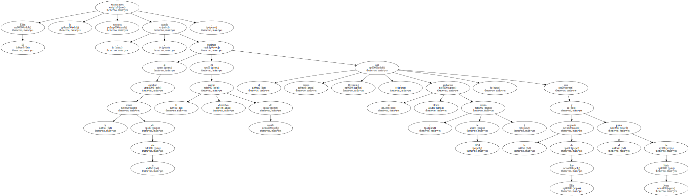
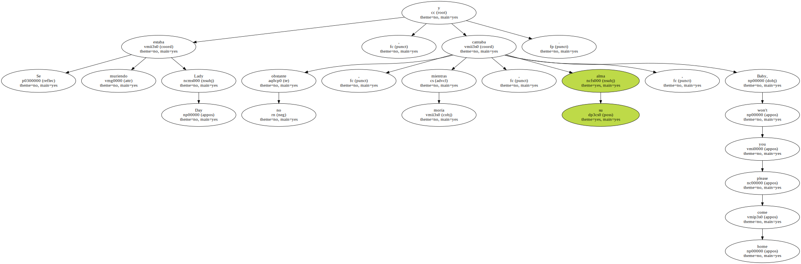
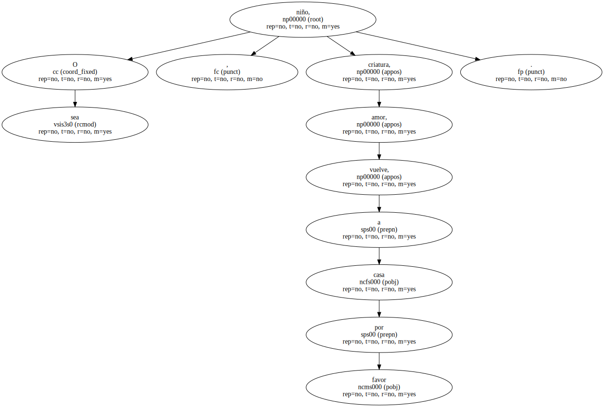

Al cogote , y fumando como una cafetera.
Ah ! , no era él , éramos todos nosotros.

Luego llegó Billie Holiday.
Bajo el epígrafe Arte, la noche temática , pasaron la vida de la única cantante del universo que no es su voz , sino su alma lo que se escucha cuando interpreta.
Gata golpeada por el mundo , pateada , violada , enganchada a todos los paraísos artificiales del planeta , jamás encontró el Edén.
El Edén lo encontramos nosotros cuando , al concluir la sesión de la tele , pusimos en la doméstica cadena de sonido el mítico Last Recording , su última grabación ( marzo de 1959 ) , con la orquesta de Ray Ellis y el piano de Hank Jones.
Se estaba muriendo Lady Day , y no obstante , mientras moría , su alma cantaba , Baby, won't you please come home.
O sea , niño, criatura, amor, vuelve, a casa por favor.
